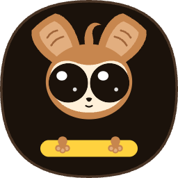
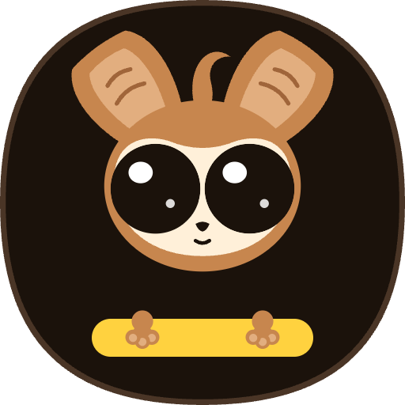
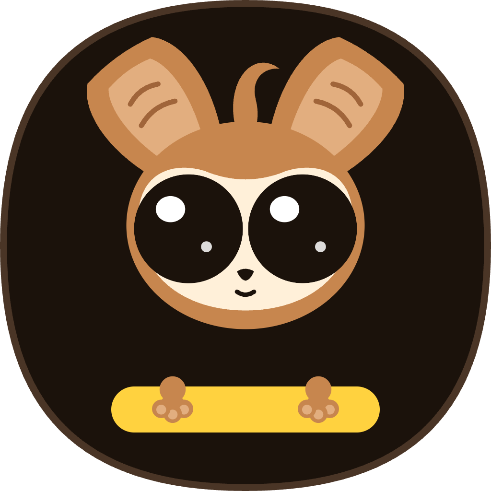
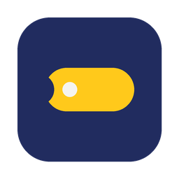
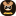
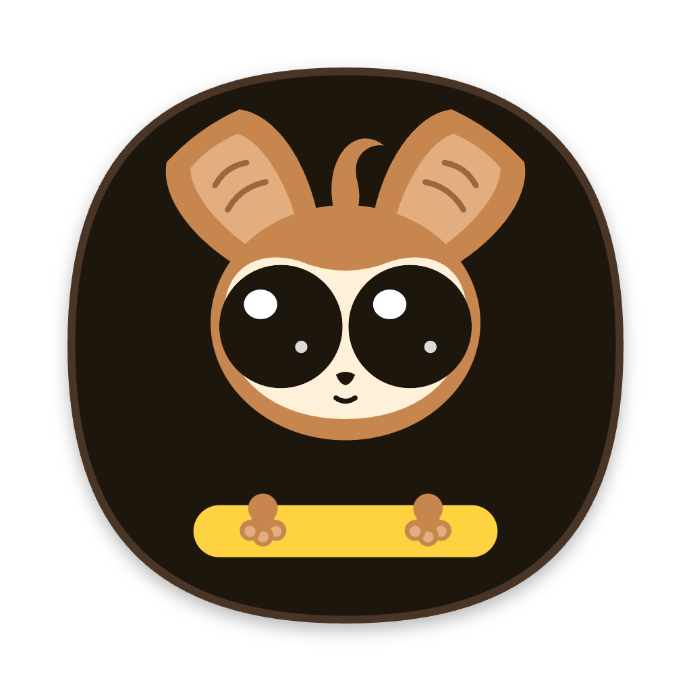
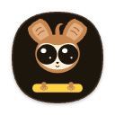
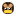
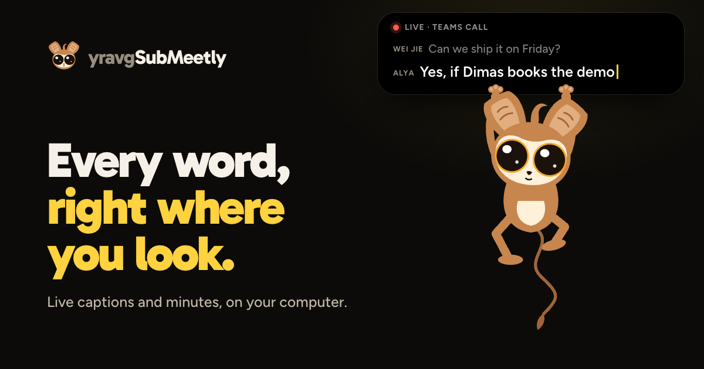

yravgSubMeetly app icon
Kasi's head on an ink squircle, holding a subtitle-yellow caption bar. Drawn by Kasi.icon() in site/kasi.js; every file here comes from build.cjs. For review only: nothing is wired into the app yet.
Every size
PNGs at their real pixel size (512 and 1024 shown at 256). Sizes marked small use the small-size variant.
On dark



On light
Before and after
The current icons: Windows from island/installer/art/yravgsubmeetly.ico, Mac from the installed app's .icns. The 256 row is shown at 128.
On dark

On light
Why 16 to 32 px use a variant
Left: Kasi.icon() scaled down. Right: the small variant. Both 5× with hard pixels. At 16 to 24 px the full icon's eyes, which touch in the mark, merge into one dark band, and the hands turn into smudges on a 1 to 2 px yellow line.
The variant keeps the same mark head but draws it larger, with shorter ears, eyes slightly smaller and further apart so a cream gap survives, bigger catch-lights, and no ear ridges or hands. The caption bar is thicker and its edges land on whole pixels; Kasi peeks over it. From 40 px up the full icon holds, so it is used as drawn.

Kasi.icon() · 16macOS (.icns)
Same art on Apple's icon grid: the tile is 824 of 1024 with a soft shadow from 64 px, like the current Mac icon, so it sits at the same size as other apps in the Dock. 16 and 32 px use the small variant.



Social share image
1200×630, from site/brand/og.html. Sample caption text, as on the page's demo.

Files
- yravgSubMeetly.ico: 16, 24, 32, 48, 64, 256 px, PNG entries
- yravgSubMeetly.icns and
yravgSubMeetly.iconset/ png/yravgSubMeetly-<size>.png: 16, 20, 24, 32, 40, 48, 64, 128, 256, 512, 1024svg/icon.svg,svg/icon-small-<size>.svg- assets/og.png from brand/og.html